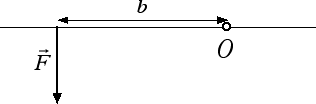

Equilibrio per rotazioni
Momento di una forza
Per introdurre il concetto di momento di una forza partiamo dalla seguente domanda: perché nelle porte le maniglie sono sempre dalla parte opposta rispetto ai cardini? Supponiamo di voler aprire un vecchio portone poco oliato. Dalla nostra esperienza sappiamo che si fa meno fatica (in altre parole, è sufficiente applicare una forza minore) spingendo il portone dalla parte opposta rispetto ai cardini. Altro esempio che ci può aiutare è quello della chiave inglese e del bullone. Anche in questo caso è molto più facile ruotare il bullone applicando la forza all'estremità del manico della chiave inglese, ossia nel punto più lontano rispetto al punto attorno al quale avviene la rotazione. Da tutti questi esempi ricaviamo che, in presenza di un corpo che può ruotare, gli effetti di una forza applicata al corpo dipendono da tre fattori:- l'intensità della forza: se applichiamo una forza maggiore, la rotazione del bullone o del portone risulta essere agevolata;
- il punto di applicazione della forza: a parità di intensità la rotazione è notevolmente agevolata se applichiamo la forza nel punto più lontano dal centro di rotazione;
- la direzione della forza: se applichiamo una forza diretta lungo il manico della chiave inglese non si verifica alcuna rotazione.

Nella figura riportata sopra O è il punto attorno al quale avviene la rotazione (ad esempio il centro del bullone), b è la distanza tra la retta d'azione della forza e il punto attorno al quale avviene la rotazione. Questa distanza prende anche il nome di braccio della forza. Il momento di una forza M si definisce come il prodotto dell'intensità F della forza per la lunghezza b del braccio: M = F · b. Dal momento che nel Sistema Internazionale la forza si misura in newton e il braccio in metri l'unità di misura del momento della forza è il newton per metro (N · m). Ad esempio, se l'intensità della forza è F = 5 N e il braccio misura b = 6 cm avremo un momento della forza pari a M = 5 N · 0.06 m = 0.3 N · m. Come casi particolari, se la retta d'azione della forza passa per il centro di rotazione O abbiamo che b = 0. In questo caso il momento della forza si annulla e non si verifica alcuna rotazione.
Il momento di una forza è la grandezza che regola i movimenti di rotazione. A questo punto è chiaro che possiamo aumentare il momento M sia aumentando l'intensità della forza F sia aumentando il braccio b: questo è il motivo per cui il portone si apre più facilmente se lo spingiamo dalla parte opposta rispetto ai cardini o per cui il bullone si allenta più facilmente spingendo una chiave inglese all'estremità del manico. Per convenzione si associa un segno alle rotazioni: il momento di una forza è un numero positivo se le rotazioni che esso provoca sono antiorarie, è invece un numero negativo se le rotazioni che esso induce sono orarie. Questa convenzione sarà di fondamentale importanza nella prossima sezione, dove andremo a stabilire quali sono le condizioni di equilibrio di un corpo che può ruotare.